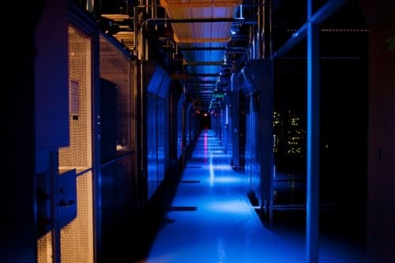
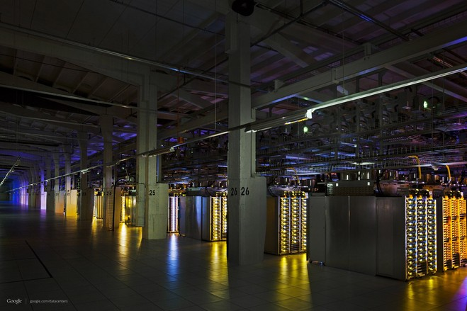

IT初学者

谷歌为了保密，把定制数据中心硬件构建在一片漆黑中。在硅谷的数据中心里，所有的谷歌服务器机柜都在黑暗里熠熠发光，维护人员戴头灯作业，俨然矿工。

黑暗中的谷歌服务器
在Equinix运作的海量数据中心里，有些笼子里的灯是开着的，而有些则关着。

黑暗中的谷歌服务器
硅谷的一个数据中心里，谷歌将服务器设施全置于完全黑暗的机柜中。技术人员要进入维护时，需像矿工一样，装配头灯照明。瞅这冰山一角，谷歌莫不是妄想竞争对手会来此黑暗之地窃取机密吧。
数据处理系统供应服务商Equinix公司的总经理夏普（Chris Sharp）曾走进过谷歌的数据中心，他说，许多公司想要全力掩盖自己的商业秘密，因为这里有如此多蕴藏着巨大价值的专利技术，但我们还是被谷歌和技术人员的头盔震惊了。

黑暗中的谷歌服务器
包括谷歌在内的许多网络巨头都有租用Equinix公司的数据中心空间。Equinix公司作为世界上最大的网络提供商，拥有着以数目庞大的计算设备服务器支撑的中枢。所有大型网络公司都在数据中心租用空间，开展业务，得以接入中枢。讽刺的是，他们与最大的竞争对手共享空间，这就可能导致了有些企业，将自己的硬件看作是竞争的一大优势，藏着掖着，不让外人看见。
夏普说，大约是在两年前，谷歌关闭了所有在Equinix数据中心租用的硬件机柜上的照明灯。甚至连吊顶上的灯也关闭了，而技术人员要查看时需带着头盔灯，就像矿工那样，根据推测，谷歌为了不想让人看见这些秘密，才出此之举。
对于夏普的话，谷歌并没有给以回应。虽然谷歌在第三方数据中心租用空间，比如Equinix的设施等，但他也自主设计服务器和网络装置。现在谷歌正在设计和搭建属于谷歌自己的数据中心，旨在提高网络服务质量的同时，做到更节能更节省。谷歌将数据中心的运营看作是与其他公司竞争一大优势，是所有业务中的重中之重。
实际上，谷歌这几年还有所松懈了。2009年，谷歌向世人揭开了首个定制数据中心的神秘面纱，不过这已是谷歌5年前开发的了，还畅谈了些一些新的硬件。但其运作的许多部分仍处于保密之中。
许多人认为这样的情况需要得到改变，Facebook如今正设计着自己的数据中心和服务器，并开放了设计源码，作为对谷歌遮遮掩掩的行径的回应。 Facebook希望借开源鼓励业界进行合作开发。对此，Facebook公司宣称，开源，使得全世界都能做到跟谷歌一样节能减排，最后，这将拯救整个地球。
一些公司已加入他们的开源计划，包括在线影片租赁提供商Netfilx公司，云计算提供商Rackspace公司，日本巨头NTT数据公司。除此之外，仍然有许多企业选择将硬件秘藏于众。
和竞争对手们共享空间
亚马逊公司的做法，和谷歌的是如出一辙。他们很少谈到自己的设施运作或是硬件方面的。很明显，亚马逊正向服务器销售商ZT科技公司定制自己的服务器，模块化组建数据中心，这一点正是步了谷歌的后尘。但是不知道的是，亚马逊设计和制造自己的硬件究竟已经进展到何处。这个礼拜，网上还在纷传猜测，亚马逊弹性云服务到底拥有多少机器的支持。
谷歌的员工需要签署保密协议，不允许讨论公司数据中心的内情，当然了，这个保密协议是开放的。正是这一纸协议护住了谷歌最深层的机密。我们已经多次看到，保密协议还是很管用的，但对于谷歌，或其他企业来说，在与Equinix协作开发的数据中心里建立业务还将面临一大难题。

黑暗中的谷歌服务器
根据自然法则，你得和你的竞争对手共享空间。Equinix公司宣称自己的数据中心，可以让网络巨头们将自己的硬件接入世界上最大的网络运营商（指的就是他们自己），还能联通彼此。Equinix将开始提供一项名为互联网核心交换（Internet Core Exchange）的业务，可以联通各大主要的网络服务提供商，现在还允许其他设备接入Equinix中心。
夏普称，在加州圣何塞，有超过70家的运营商接入Equinix的主数据中心。他说：我们为网络运营商提供了高效切换流量的渠道，这正是Equinix公司赖以生存的优势。不只是网络可以利用这样的优势沟通彼此，网站也可以做到。
安全保密工作高于一切，数据中心还有一道关卡，那就是指纹识别。在你的周围，还有安保摄像头时刻注视你的左右，每一家公司都会把他们的机器放到自己的机柜中去，通过更多的指纹识别来护其周全。但一旦你过了指纹识别那关，你可以好好看看那些机柜了，出于散热的目的，这些并未被隔开。
相比于谷歌尽一切所能将自己极力隐藏起来，有些企业还尽情展现自己的logo.为了竞争对手不会窥探到他们的设备，许多公司会在没有员工工作时，将机柜内的灯关掉，有些保密措辞甚至更严密。